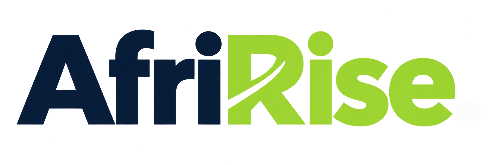
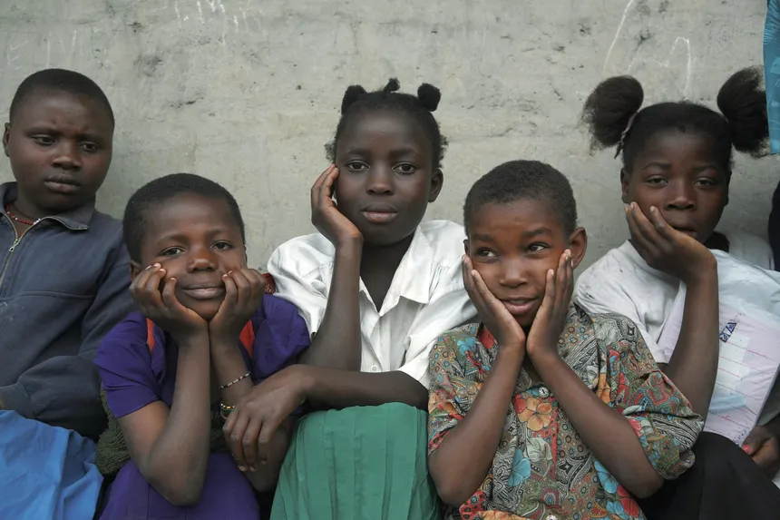
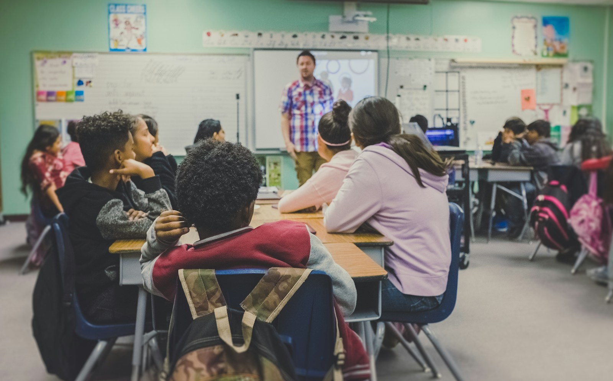
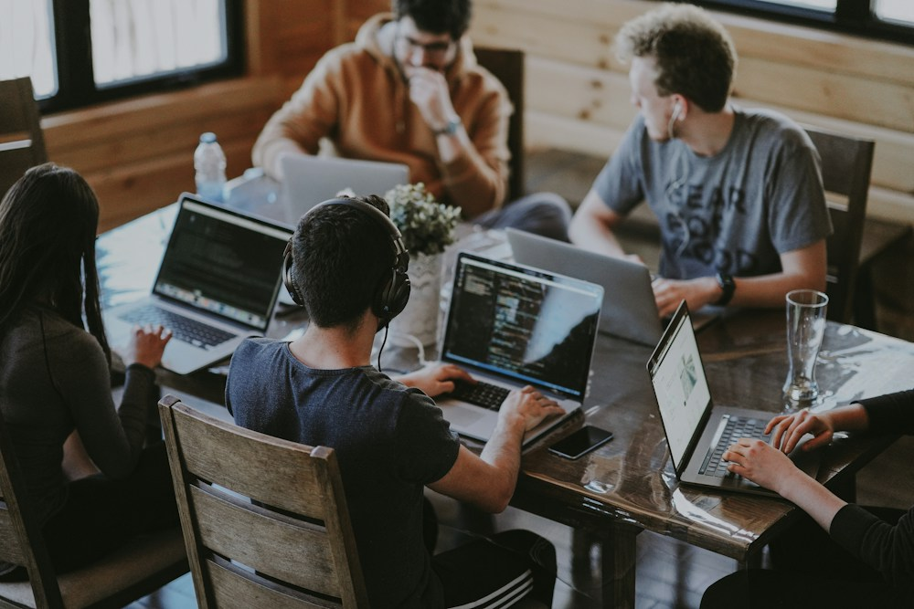

FOUNDING FUNDUSD
$500,000our fundraising goal
Support the next chapter in learning, economic opportunity and community wellbeing.
USD only. Checkout availability depends on campaign approval and payment setup.

Every child deserves a strong beginning. Every young person, a way forward. Every community, a foundation to thrive.
Help turn that belief into opportunity through learning, livelihoods and technology.

We’re working towards a $500,000 founding fund to support AfriRise programmes. Help shape a beginning that communities can build on.
See our commitment to accountability ↗Support the next chapter in learning, economic opportunity and community wellbeing.
USD only. Checkout availability depends on campaign approval and payment setup.
Three connected priorities. One belief: people deserve the opportunity and support to shape their own future.

01 / LEARNINGHelp children access learning resources and educational opportunities that give their potential room to grow.
Connect young people with practical skills, useful tools and pathways towards economic independence.

03 / WELLBEINGSupport practical community initiatives that help adults and households build stability and recover from setbacks.
These are our programme priorities. Specific locations, eligibility, budgets and delivery dates will be published as programmes are approved.
AfriRise is an independently registered organisation with a simple ambition: help African communities build better futures.
Our founding team brings experience across technology infrastructure, education, scholarships, summits and hackathons. AfriRise is a separate organisation, bringing that experience into a new chapter of collective giving.
We believe technology can help communities learn, earn and build resilience—when it is shaped around real needs.
AfriRise is independently registered. Its full registered name, registration number, trustees and official contact details will be published before donation collection begins.
Understand community needs and define programmes with a clear purpose.
Share the scope, budget and intended outcomes before asking for support.
Put people, practical delivery and careful oversight at the centre.
Report spending, progress and lessons—including what needs to improve.
Our responsibility is to show what was delivered, what changed, and what we still need to learn.
As programmes begin, this space will document their progress. We will distinguish AfriRise’s results from work previously delivered by members of our founding team.
Explore our transparency approach ↗Activities completed, resources provided and delivery dates.
Programme-specific results, measurement methods and follow-up.
Expenditure summaries, reporting periods and explanations of changes.
AfriRise programme results and financial reports have not yet been supplied for publication.
Before you give, you should know who is responsible, what your donation supports and how to ask questions.
AfriRise operates separately from the founding team’s other organisations. Donations must be received through AfriRise’s verified organisational payment arrangements. Full legal and payment details will be published before checkout is enabled.
The founding appeal is intended to support education, youth livelihoods and community wellbeing. A detailed, approved allocation—including delivery, administration and monitoring costs—is still to be published. No allocation percentages or participant numbers are promised on this preview.
Campaign-specific rules for underfunding, excess funds, cancellations, refunds and reallocations will be published before contributions are accepted. Donors must be able to review those rules at checkout.
Our approach is to protect participants’ dignity and privacy, use appropriate permission for stories and photographs, and avoid public disclosure of sensitive personal information. The complete safeguarding policy will be published before programme applications open.
This section will hold AfriRise’s registration information, governance details and programme and financial reports once verified documents are ready. Reports are not yet available on this preview.
For stronger beginnings.
For opportunity that lasts.